Make small pictures big.
Privately.
Sharpr is an AI image upscaler that runs on your own GPU. Sharpen blurry photos and enlarge them up to 4x on Android and desktop, with nothing uploaded anywhere. The private, open source alternative to cloud enhancers like Remini.
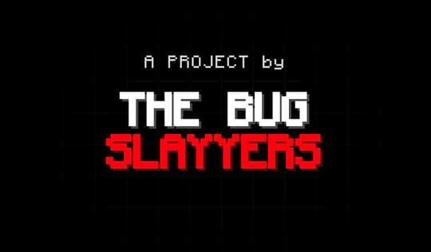
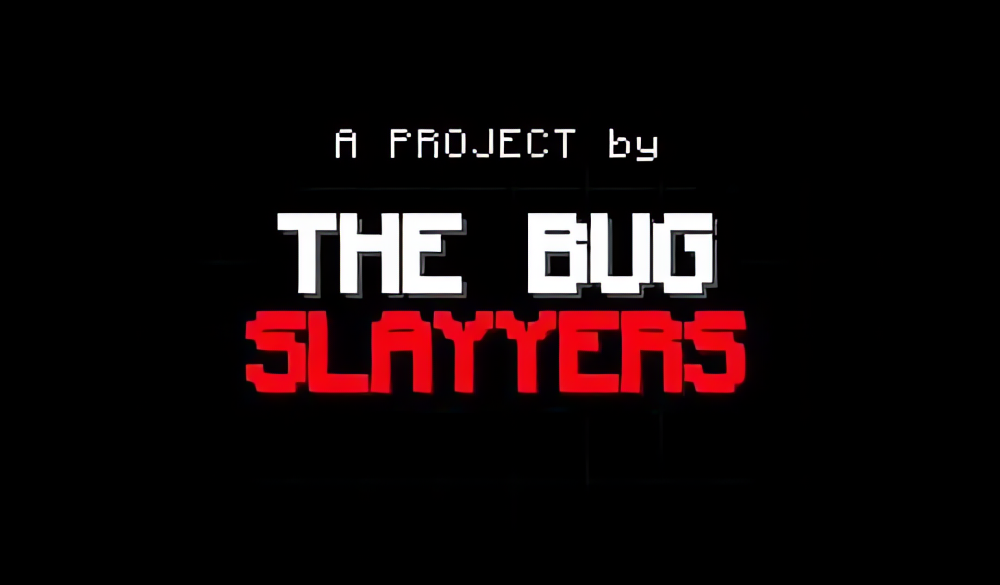
Real output from the Fast model at 4x. Drag the handle.
Your personal memories never leave your device.
Family photos, old scans, screenshots of things that matter. Cloud enhancers have to receive your pictures to work on them. Sharpr brings the AI model to the picture instead, so the only place your images exist is the phone or computer you already trust.
- Nothing is uploadedAll inference happens locally on your GPU or CPU. No server is involved.
- Zero Android permissionsThe Android app asks for no permissions at all, not even internet access, and uses the system photo picker.
- No account, no trackingNothing to sign up for and no analytics in the app.
- Open source, so you can checkDo not take our word for it. The whole project is on GitHub under the MIT license.
Everything you need to rescue a photo
Built for the best result at the best speed, with controls when you want them and sensible defaults when you do not.
Your GPU does the heavy lifting
Sharpr runs the super-resolution network through ncnn on the Vulkan GPU, tile by tile. If the GPU fails to load, errors out or returns a bad result, the job finishes on the CPU automatically and the app tells you which engine ran.
- Auto, GPU-only or CPU-only, your choice
- Garbage-output check on the first tile catches buggy drivers
- Live progress with tile count and the engine in use
- On a Snapdragon 7-series phone (Adreno 720) the GPU was about 4x faster than the CPU
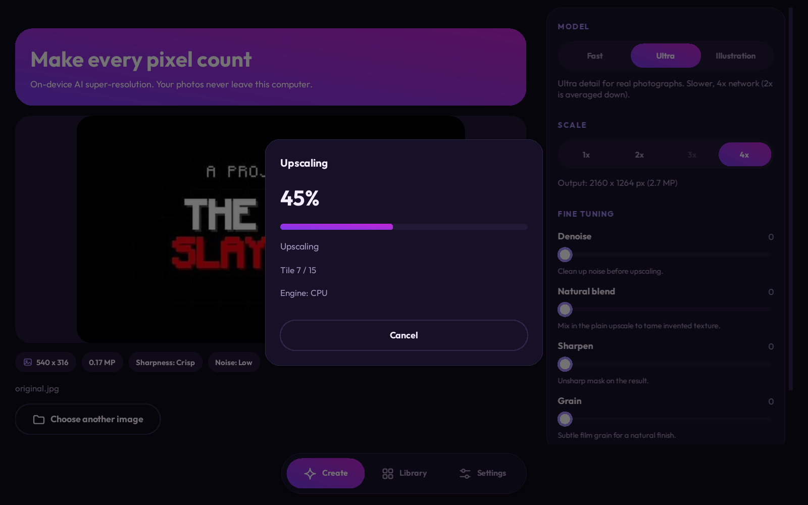
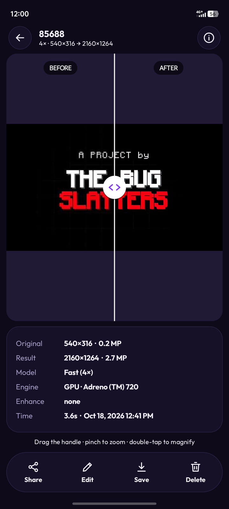
See exactly what changed
Open any result to compare before and after with a draggable slider. Pinch to zoom into the pixels and both images stay perfectly aligned.
- Drag the handle, pinch to zoom, double-tap to magnify
- Details panel: sizes, model, engine, time and settings used
- Share or save in one tap
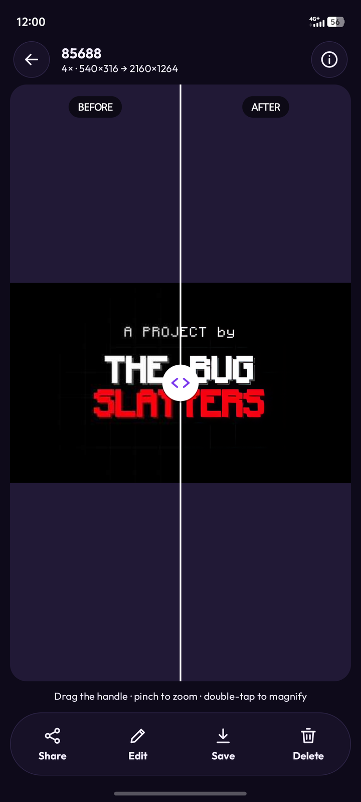
It knows when an image does not need help
Pixel count is a poor measure of quality: a blurry 2K photo needs upscaling more than a crisp one. Sharpr measures real sharpness on native-resolution crops, and only holds back images that are both large and already sharp.
- Blurry high-resolution photos are never blocked
- The scale lowers itself to stay under your output size limit
- 1x Enhance restores detail at the original size when an image is too big to enlarge
- Optional strict mode removes the override
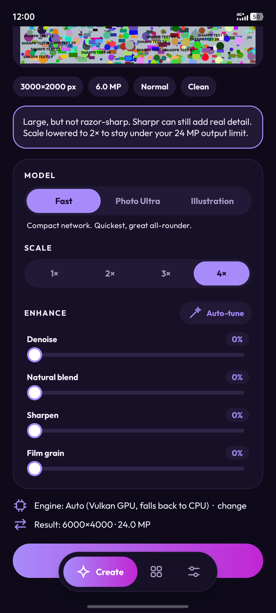
Every result kept. Regenerate any time.
Results live in a private library. Not happy with one? Edit it: change the model, scale or enhancements and regenerate from the original image, never from an already-processed copy. Keep the old version or replace it.
- Three models: Fast, Photo Ultra and Illustration
- Denoise, natural blend, sharpen and film grain sliders
- Auto-tune picks settings from the measured noise and sharpness
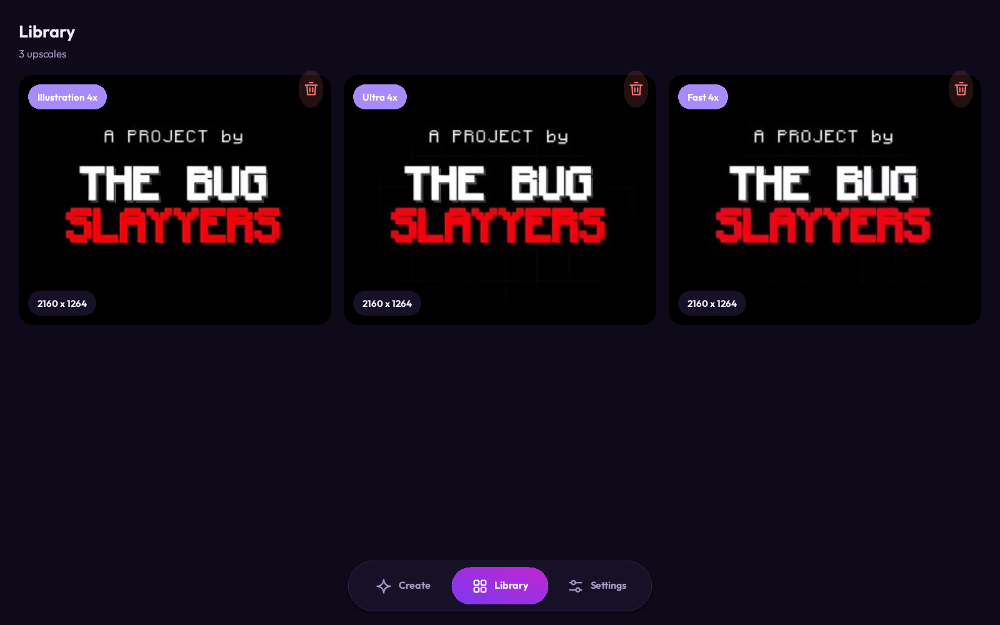
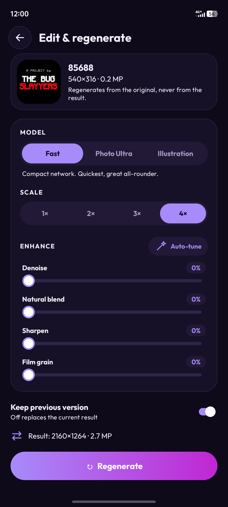
Make it yours, down to the tile size
Light, dark or AMOLED black. Four purple accents. Three fonts. And the engine room is yours too: backend, CPU threads, tile size, FP16, guard thresholds, output format and quality.
- Detects your Vulkan GPU and shows its memory budget
- PNG, JPEG or WebP output with a quality slider
- Same design on phone and desktop
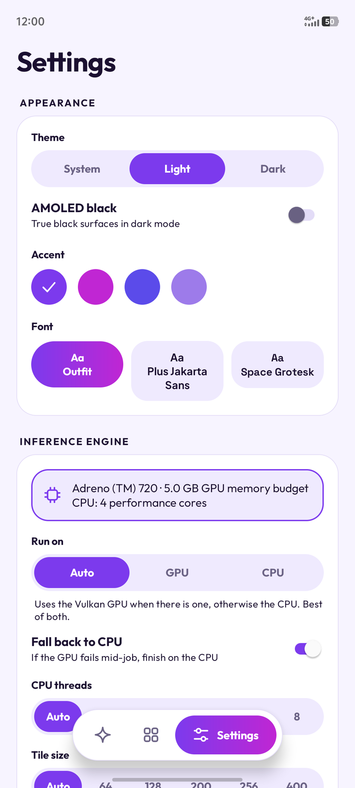
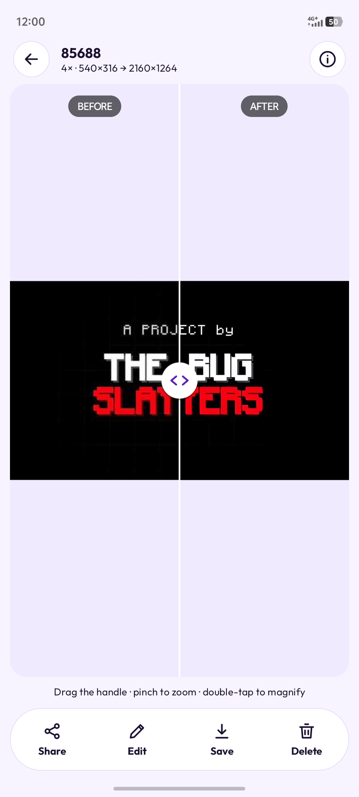
Share and save
Send a result straight to any app, or save it to your gallery in the format you chose.
Pro controls
Tile size, thread count and FP16 let you trade speed against memory on any device.
Fast by default
The compact Fast model gives a great 4x in seconds. Switch to Photo Ultra when you want the last bit of detail.
One small image, three models
Every image on this page was upscaled by Sharpr itself from a single 540x316 original. Pick a model and drag the slider.
Zoomed in on the lettering
The same crop of the original, enlarged with each method.
| Setup | Task | Engine | Time |
|---|---|---|---|
| Snapdragon 7-series phone | Fast, 540x316 to 2160x1264 | GPU (Adreno 720) | 3.6 s |
| Snapdragon 7-series phone | Fast, 540x316 to 2160x1264 | CPU, 6 threads | 13.8 s |
| Windows laptop | Fast, 540x316 to 2160x1264 | GPU (Intel UHD) | 3.96 s |
| Windows laptop | Illustration, same image | GPU (Intel UHD) | 45 s |
| Windows laptop | Photo Ultra, same image | GPU (Intel UHD) | 129 s |
Measured with default enhancement settings on the developers' own devices. Your numbers will vary with your hardware, and heavier models cost more time on integrated GPUs.
Cloud enhancers versus Sharpr
You get the same kind of AI upscaling, without handing your photos to someone else's server.
| Cloud AI enhancers (apps like Remini) | Sharpr | |
|---|---|---|
| Where your photos are processed | Their servers | Your device |
| Needs an internet connection | Yes | No, fully offline |
| Source code you can inspect | Closed | Open, MIT license |
| Uses your GPU | No, theirs | Yes, with CPU fallback |
| Control over model, scale and tuning | Limited | Full |
Cloud services differ from one another. The first column describes how cloud-based enhancers work in general.
One design, on your phone and your desktop
Same purple look, same features, same results. The desktop app even opens in a phone-style layout and grows into two columns as you widen the window.
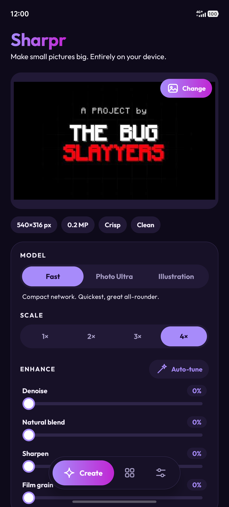
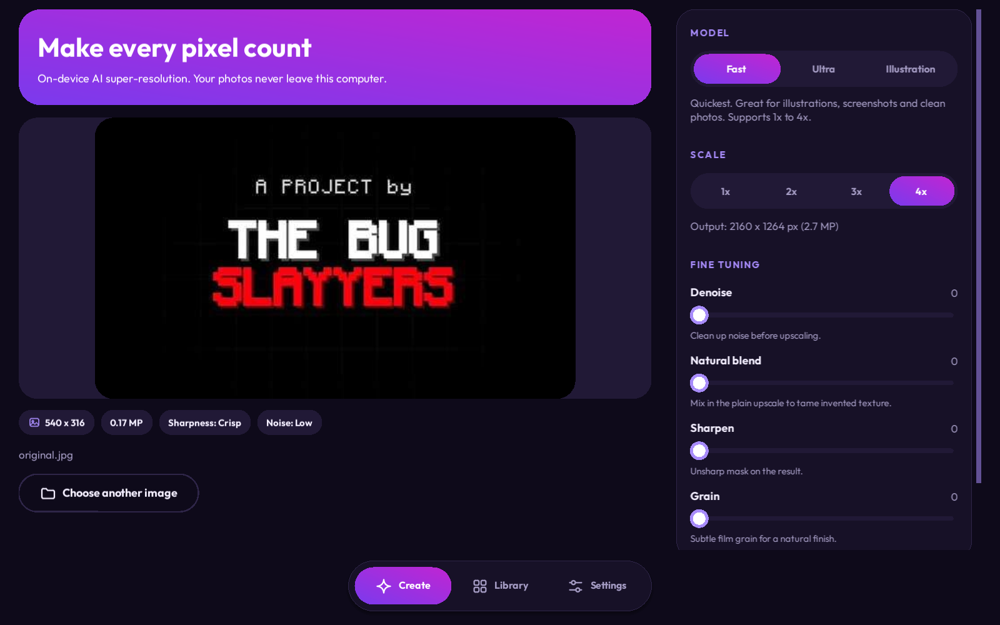
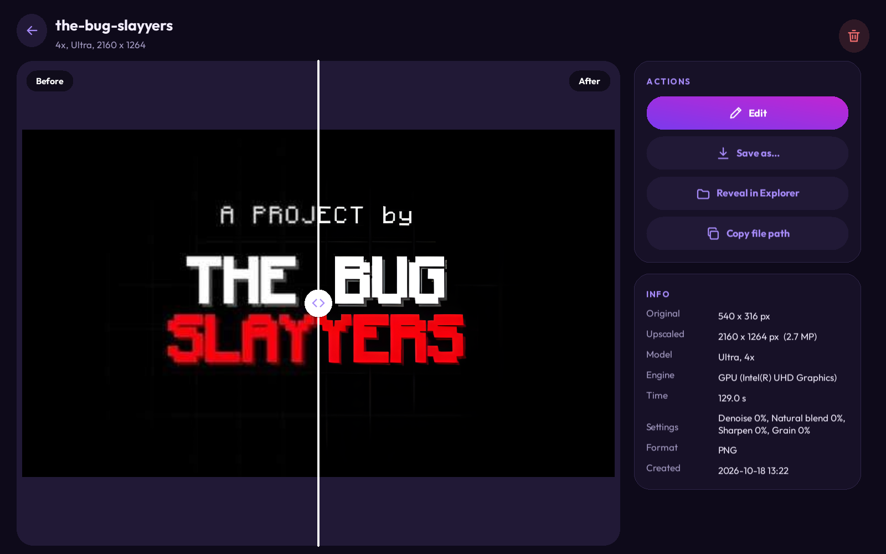
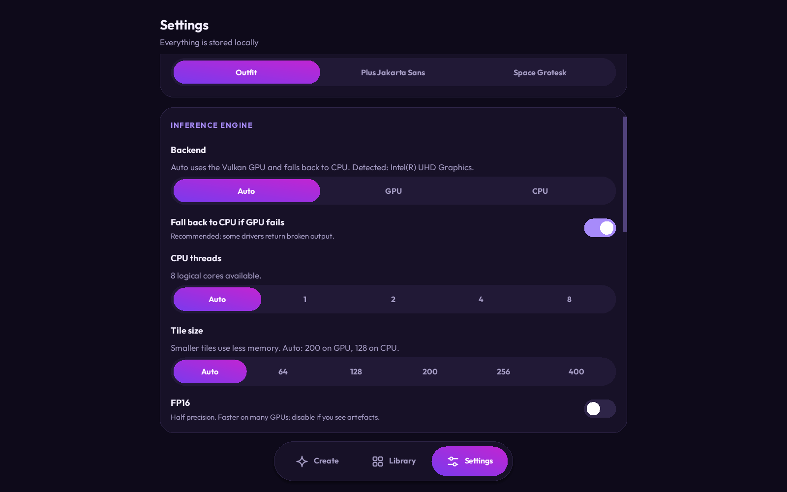
Phone-style mode, responsive as you resize
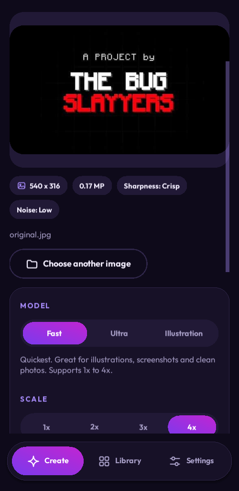
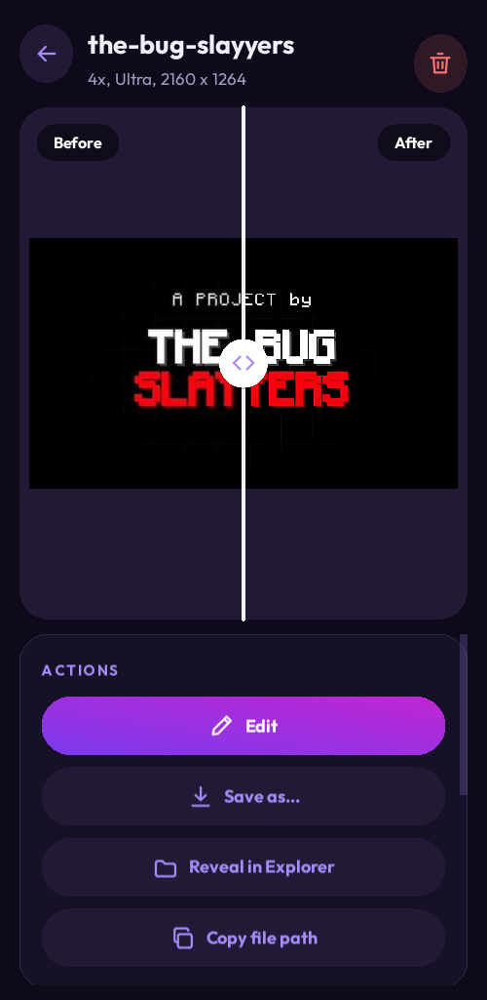
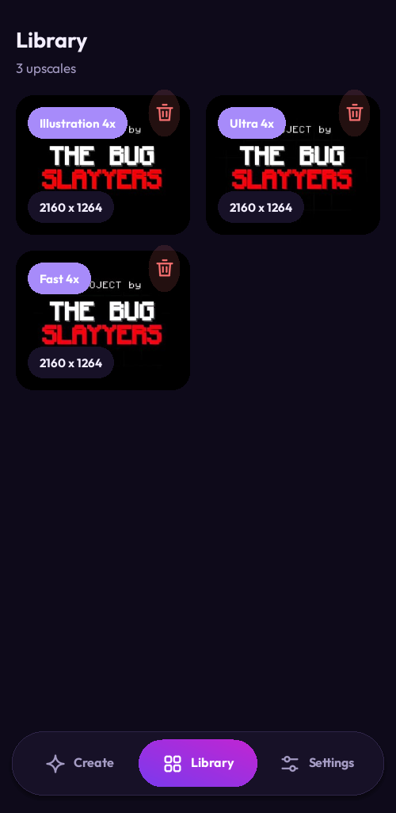
Wherever your photos live
Android
Android 8.0 and newer, with Vulkan GPU acceleration. Build it from the repository today. The Google Play release is on its way.
Desktop
A Kivy app that runs on every major desktop platform, with Vulkan GPU acceleration through ncnn and a CPU fallback.
iOS
An iPhone and iPad version is planned, bringing the same private, on-device upscaling to Apple devices.
Follow progressA real pipeline, built on proven open source
Sharpr combines OpenCV for image processing, ncnn for fast GPU inference and Kivy for the desktop interface.
ncnn
Tencent's high-performance neural network engine. It runs the Real-ESRGAN models on mobile and desktop GPUs through Vulkan, with an optimised CPU path as the safety net.
- Vulkan GPU compute with fp16
- Tiled inference for low memory use
- Same engine on Android and desktop
OpenCV
The computer vision workhorse. It measures sharpness and noise to drive the smart guard and Auto-tune, and handles denoising, the natural blend, sharpening and film grain around the network.
- Laplacian sharpness on native crops
- Non-local means and bilateral denoise
- Banded post-processing for large images
Kivy
A cross-platform Python UI framework. The desktop app is drawn entirely with Kivy canvas instructions, so the theme, accent and font switch live and match the Android look.
- Windows, macOS and Linux
- Responsive phone to desktop layouts
- ncnn Python bindings for inference
Models: Real-ESRGAN (realesr-animevideov3, realesrgan-x4plus, realesrgan-x4plus-anime). The Android app is written in Kotlin with XML layouts and a C++ core through the NDK.
Try it in a few minutes
Desktop
# Windows PowerShell
git clone https://github.com/anshm-2166/WikiTechxHackDay-Project-Sharpr
cd WikiTechxHackDay-Project-Sharpr/desktop
.\run.ps1
Android
# fetch the prebuilt ncnn libraries, then build
scripts\setup-native.ps1
.\gradlew.bat :app:assembleDebug